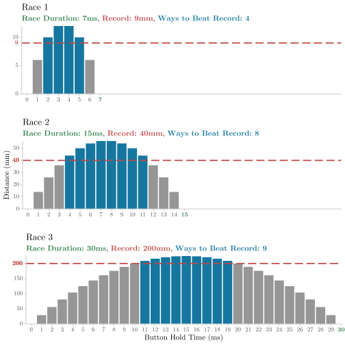
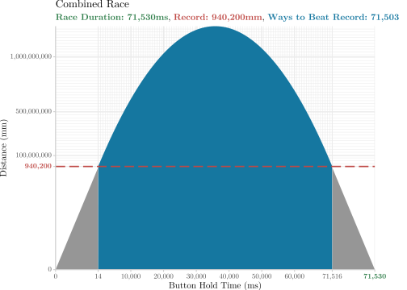

2023 Day 6
Wait For It
Ho ho ho, fellow adventurers!
Advent of Code day 6 presents a problem involving toy boat races, where participants must find optimal strategies to beat existing distance records.
This puzzle can be solved with some basic maths involving quadratics.
First, we’ll read the input.
Part 1 Hold to Gold
Task 1
You’re given a list of races for toy boats. Each race contains a race duration (ms) and a current distance record (mm).
The distance a toy boat travels in a race is determined by how long you hold the button at the start: each millisecond of holding increases the boat’s speed by 1 mm/ms, but also reduces the remaining time for movement. After releasing the button, the boat travels at its accumulated speed for the rest of the race duration.
Find the number of ways to beat each race’s record and get the product of those numbers.
Example
The diagram below illustrates the calculations for this example of three races.
Time: 7 15 30
Distance: 9 40 200Figure Source
library(tidyverse)
text <- "Time: 7 15 30
Distance: 9 40 200"
lines <-
str_split_1(text, "\n") |>
map(\(line) str_extract_all(line, "\\d+", simplify = TRUE)) |>
map(as.numeric)
count_ways <- function(t, d) {
upper <- (-t - sqrt(t ^ 2 - 4 * (-1) * (-d))) / 2 * (-1)
lower <- (-t + sqrt(t ^ 2 - 4 * (-1) * (-d))) / 2 * (-1)
ceiling(upper) - floor(lower) - 1
}
create_plot <- function(race_id, race_duration, record, x_limit = 30) {
df <- tibble(wait_time = seq(from = 0, to = race_duration, by = 1)) |>
mutate(
distance = wait_time * (race_duration - wait_time),
fill = case_when(
distance > record ~ "#1577A0",
TRUE ~ "#969696"
)
)
ggplot(df, aes(wait_time, distance, fill = I(fill))) +
geom_col() +
geom_hline(
aes(yintercept = record),
data = NULL,
col = "#BE4844",
linetype = "longdash",
size = 0.8
) +
scale_x_continuous(
breaks = seq(from = 0, to = race_duration, by = 1),
labels = \(break_value) ifelse(break_value == race_duration, glue::glue("<b style = 'color:#2F7E4A;'>{break_value}</b>"), as.character(break_value)),
limits = c(-0.5, x_limit),
expand = c(0, 0)
) +
scale_y_continuous(
breaks = c(scales::breaks_pretty(n = 4)(df$distance), record),
labels = \(break_value) ifelse(break_value == record, glue::glue("<b style = 'color:#BE4844;'>{break_value}</b>"), as.character(break_value)),
expand = c(0, 0)
) +
labs(
title = glue::glue("Race {race_id}"),
subtitle = glue::glue("<b style = 'color:#2F7E4A;'>Race Duration: {race_duration}ms</b>, <b style = 'color:#BE4844;'>Record: {record}mm</b>, <b style = 'color:#1577A0;'>Ways to Beat Record: {count_ways(race_duration, record)}</b>"),
x = "",
y = ""
) +
theme_minimal(base_family = "LM Roman 10") +
theme(
panel.grid = element_blank(),
axis.line.x.bottom = element_line(color = "#CCCCCC"),
axis.ticks.x.bottom = element_line(color = "#CCCCCC"),
axis.line.y.left = element_line(color = "#CCCCCC"),
axis.ticks.y.left = element_line(color = "#CCCCCC"),
axis.text.x = ggtext::element_markdown(),
axis.text.y = ggtext::element_markdown(),
plot.subtitle = ggtext::element_markdown()
)
}
plots <-
pmap(list(seq_along(lines[[1]]), lines[[1]], lines[[2]]), create_plot) |>
modify_at(2, \(p) p + labs(y = "Distance (mm)")) |>
modify_at(3, \(p) p + labs(x = "Button Hold Time (ms)"))
# Using cowplot with custom font and markdown made the subtitle spacing incorrect
# Works fine with gridExtra::grid.arrange
# cowplot::plot_grid(plotlist = plots, ncol = 1)
gridExtra::grid.arrange(plots[[1]], plots[[2]], plots[[3]], ncol = 1)
\[ \newcommand{\blue}[1]{\color{##1577A0}\textbf{#1}\color{##55595C}} \newcommand{\orange}[1]{\color{##91672C}\textbf{#1}\color{##55595C}} \newcommand{\red}[1]{\color{##BE4844}\textbf{#1}\color{##55595C}} \newcommand{\green}[1]{\color{##2F7E4A}\textbf{#1}\color{##55595C}} \]
\[\blue{4} * \blue{8} * \blue{9} = \orange{288}\]
Parabolic Pondering
To calculate the number of ways to beat the record, we can find the difference between the upper and lower \(x\) values of the blue bars.
These bounds can be found as the intersection of the red line and a frowny parabola which is a function of the button hold time and race duration.
Algebraic Adventures
Given:
- \(\green{T}\): Total race time in milliseconds.
- \(\red{D}\): Record distance that needs to be beaten, in millimeters.
- \(w\): Time in milliseconds for which the button is held down at the start of the race.
The distance your boat travels when the button is held for \(w\) milliseconds with total race time \(T\) is: \[w \cdot (T - w)\]
This matches the current record \(D\), when: \[D = w \cdot (T - w)\]
This can be rewritten as a quadratic equation in terms of \(w\): \[0 = -w^2 + T \cdot w - D\]
To solve for \(w\), we use the quadratic formula: \[w = \frac{-b \pm \sqrt{b^2 - 4ac}}{2a}\]
In our equation, \(a = -1\), \(b = T\), and \(c = -D\). Thus, substituting these values into the quadratic formula yields: \[w = \frac{-T \pm \sqrt{T^2 - 4 \cdot (-1) \cdot (-D)}}{2 \cdot (-1)}\]
Simplifying, we get two values for (w), which represent the upper and lower bounds of the button holding time that allows the boat to exceed the record distance: \[ \begin{aligned} w_{upper} &= \frac{-T - \sqrt{T^2 - 4D}}{2 \cdot (-1)} \\ w_{lower} &= \frac{-T + \sqrt{T^2 - 4D}}{2 \cdot (-1)} \\ \end{aligned} \]
To find the number of ways to beat the record, we calculate the number of integers in the open interval \((w_{lower}, w_{upper})\): \[\text{\blue{Number of ways}} = \lceil w_{upper} \rceil - \lfloor w_{lower} \rfloor - 1\]
Then simply plug in the numbers for each race and get the product of the resulting values.
import math
import re
def count_ways(T, D):
upper = (-T - math.sqrt(T ** 2 - 4 * (-1) * (-D))) / 2 * (-1)
lower = (-T + math.sqrt(T ** 2 - 4 * (-1) * (-D))) / 2 * (-1)
return math.ceil(upper) - math.floor(lower) - 1
times, distances = [[int(x) for x in re.findall(r'\d+', line)] for line in lines]
answer1 = math.prod(count_ways(time, distance) for time, distance in zip(times, distances))
print(answer1)
#> 500346
- Find the upper and lower button hold times which beat the record
- This can be expressed as the intersection between \(f(x) = D\) and \(f(x) = w \cdot (T - w)\)
- Compute the product of the differences between the upper and lower bounds
Part 2 Magnitude Multiplied
Task 2
Rather than multiple races, the race durations and distance records are each concatenated to form one giant race.
Find the number of ways to beat this race’s record.
Example
Time: 71530
Distance: 940200Figure Source
# https://stackoverflow.com/questions/35511951/r-ggplot2-collapse-or-remove-segment-of-y-axis-from-scatter-plot
squish_trans <- function(from, to, factor) {
trans <- function(x) {
if (any(is.na(x))) return(x)
isq <- x > from & x < to
ito <- x >= to
x[isq] <- from + (x[isq] - from)/factor
x[ito] <- from + (to - from)/factor + (x[ito] - to)
x
}
inv <- function(x) {
if (any(is.na(x))) return(x)
isq <- x > from & x < from + (to - from)/factor
ito <- x >= from + (to - from)/factor
x[isq] <- from + (x[isq] - from) * factor
x[ito] <- to + (x[ito] - (from + (to - from)/factor))
x
}
scales::trans_new("squished", trans, inv)
}
time_distance <-
lines |>
map_chr(str_c, collapse = "") |>
map_int(as.integer)
race_duration <- time_distance[[1]]
record <- time_distance[[2]]
lower_upper <- function(t, d) {
upper <- (-t - sqrt(t ^ 2 - 4 * (-1) * (-d))) / 2 * (-1)
lower <- (-t + sqrt(t ^ 2 - 4 * (-1) * (-d))) / 2 * (-1)
c(floor(lower), ceiling(upper) - 1)
}
lower_upper_values <- lower_upper(race_duration, record)
lower_win <- lower_upper_values[[1]]
upper_win <- lower_upper_values[[2]]
resolution <- 1000
df <- tibble(
wait_time = unique(c(
seq(from = 0, to = lower_win, length.out = resolution),
seq(from = lower_win, to = upper_win, length.out = resolution),
seq(from = upper_win, to = race_duration, length.out = resolution)
)),
distance = wait_time * (race_duration - wait_time),
is_win = wait_time > lower_win & wait_time < upper_win
)
ggplot(NULL, aes(wait_time, distance)) +
geom_area(data = filter(df, wait_time <= lower_win), fill = "#969696") +
geom_area(data = filter(df, wait_time >= upper_win), fill = "#969696") +
geom_area(data = filter(df, wait_time > lower_win & wait_time < upper_win), fill = "#1577A0") +
geom_hline(
aes(yintercept = record),
data = NULL,
col = "#BE4844",
linetype = "longdash",
size = 0.8
) +
scale_x_continuous(
minor_breaks = seq(from = 0, to = race_duration, length.out = 100),
labels = \(break_value) ifelse(break_value == race_duration, glue::glue("<b style = 'color:#2F7E4A;'>{scales::label_comma()(break_value)}</b>"), scales::label_comma()(break_value)),
breaks = c(0, 14, seq(from = 10000, to = 60000, by = 10000), 71516, race_duration),
expand = c(0, 0),
transform = squish_trans(lower_win , upper_win + 1, 1000)
) +
scale_y_continuous(
breaks = c(0, record, 100000000, 500000000, 1000000000),
minor_breaks = seq(from = 0, to = 1279135224, length.out = 50),
labels = \(break_value) ifelse(break_value == record, glue::glue("<b style = 'color:#BE4844;'>{scales::label_comma()(break_value)}</b>"), scales::label_comma()(break_value)),
transform = squish_trans(940200, 1279135224, 1000),
expand = c(0, 0)
) +
labs(
title = "Combined Race",
subtitle = glue::glue("<b style = 'color:#2F7E4A;'>Race Duration: {scales::label_comma()(race_duration)}ms</b>, <b style = 'color:#BE4844;'>Record: {scales::label_comma()(record)}mm</b>, <b style = 'color:#1577A0;'>Ways to Beat Record: {scales::label_comma()(count_ways(race_duration, record))}</b>"),
x = "Button Hold Time (ms)",
y = "Distance (mm)"
) +
theme_minimal(base_family = "LM Roman 10") +
theme(
axis.line.x.bottom = element_line(color = "#CCCCCC"),
axis.ticks.x.bottom = element_line(color = "#CCCCCC"),
axis.line.y.left = element_line(color = "#CCCCCC"),
axis.ticks.y.left = element_line(color = "#CCCCCC"),
axis.text.x = ggtext::element_markdown(),
axis.text.y = ggtext::element_markdown(),
plot.subtitle = ggtext::element_markdown(),
plot.margin = margin(t = 0, r = 40, b = 0, l = 0, unit = "pt")
)
Just plug the new numbers into the same formula.
- Concatenate the race durations and distance records
- Compute the number of ways to beat this race’s record using the same formula as part 1